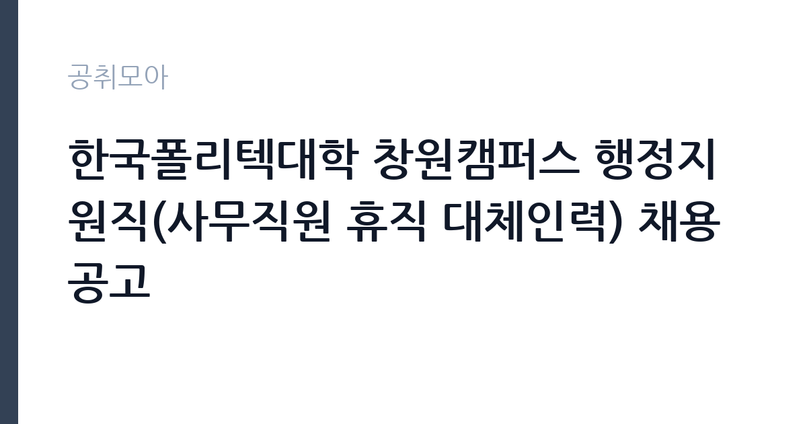

[공공기관] 한국폴리텍대학 창원캠퍼스 행정지원직(사무직원 휴직 대체인력) 채용 공고
학교법인한국폴리텍 · 경남 · 마감 2026-10-25 (D-8) · 출처 잡알리오

한눈에 보는 모집 조건
| 기관 | 학교법인한국폴리텍 |
|---|---|
| 공고명 | 한국폴리텍대학 창원캠퍼스 행정지원직(사무직원 휴직 대체인력) 채용 공고 |
| 고용형태 | 정규직 |
| 근무지 | 경남 |
| 게시일 | 2026-10-17 |
| 마감일 | 2026-10-25 (D-8) |
지원자격, 이렇게 읽으세요
- 공공기관 채용공시
- 세부 조건은 원문 공고문 확인
공고문은 연령과 학력, 성별을 모두 제한하지 않는다고 적고 있습니다. 대신 학교법인 인사규정 제19조의 결격사유가 없어야 하고, 남성은 병역을 마쳤거나 면제된 상태여야 합니다. OA 프로그램을 활용한 문서·표 작성이 가능한지가 실무 기준입니다. 부패방지 및 국민권익위원회 설치와 운영에 관한 법률 제82조에 따른 비위면직자는 5년간 공공기관 취업이 제한되므로, 공직에서 퇴직한 지원자는 이 조항을 먼저 확인해야 합니다.
이 공고의 포인트
한국폴리텍대학은 고용노동부가 설립한 학교법인으로, 현장 기술인력 양성 과정을 운영합니다. 창원캠퍼스는 기계·전기·용접·정보통신 등 제조업 훈련 과정을 중심으로 지역 산업과 맞물려 움직입니다. 행정지원직은 훈련 운영을 뒷받침하는 교무·학사·예산·시설 관련 사무를 맡습니다. 학력 제한이 없고 경력도 크게 가리지 않는 대신, 계약 기간이 휴직자 복직까지로 정해져 있다는 점이 이 공고의 성격을 결정합니다.
전형은 어떻게 진행되나
서류전형으로 자격 요건과 직무 적합성을 확인한 뒤 면접전형을 거쳐 최종합격자를 선발하는 절차가 일반적입니다. 대체인력 채용은 임용 예정일에 바로 근무할 수 있는지를 중요하게 봅니다. 공고문에도 최종합격자 발표 후 임용예정일에 근무 가능한 자라는 조건이 적혀 있습니다. 제출 서류와 전형 일정은 원문 공고문과 캠퍼스 채용 게시판에서 확인하십시오.
원문에서 확인한 전형 방식
○ (연령) 제한없음 ○ (학력, 성별) 제한없음 ○ 학교법인 인사규정 제19조의 결격사유에 해당하지 않는 자 (※남자의 경우 병역필 또는 면제자) ○ 해당 직무수행이 가능한자(OA프로그램 활용 등) ○ 최종합격자 발표 후 임용예정일에 근무 가능한 자 *부패방지권익위법 제82조에 따른 비위면직자는 5년간 공공기관 취업제한
이런 분께 추천해요
- 공공기관 행정·교무 행정 실무를 처음 시작하려는 지원자
- 문서 작성과 엑셀 정리에 익숙하고 업무 공백 없이 출근할 수 있는 사람
- 경남 창원 생활권에서 근무지를 고려하는 지원자
지원 전 체크리스트
- 휴직 대체인력으로 계약 종료 시점이 휴직자 복직에 연동된다는 점 확인
- 병역 요건과 인사규정 결격사유를 사전에 점검
- 비위면직자 5년 취업제한 조항 해당 여부 확인
- 임용예정일부터 근무 가능한지 일정 조율
모집 일정과 제출 타이밍
접수는 공고 게시일부터 10월 25일까지 진행되며, 캠퍼스 누리집 교직원 채용정보 게시판과 공공기관 채용공시를 통해 공고가 올라옵니다. 접수 방식이 전자우편인지 방문·우편인지 공고문에 따라 다르므로 제출 형식을 먼저 확인해야 합니다. 서류 통과 후 면접은 접수 마감 뒤 1~2주 안에 배치되는 경우가 많으니, 그 기간에 연락 가능한 번호를 적어두십시오.
직무 이해하기: 공공기관
행정지원직의 업무는 훈련과정 운영 지원에서 출발합니다. 학사 일정에 맞춘 수강생 등록·출결 자료 정리, 훈련비와 장비 구매에 따른 예산 집행 보조, 각종 공문 접수와 발송, 시설 이용 관련 민원 응대가 기본입니다. 창원캠퍼스는 제조업 훈련 비중이 높아 실습 장비와 안전 관련 서류가 많고, 훈련생 상담과 취업 지원 자료까지 손이 갑니다. 문서 정확도와 마감 준수가 곧 업무 평가로 이어지는 자리입니다.
자기소개서 작성 팁
자기소개서는 OA 활용 능력을 구체적인 산출물로 증명하는 데 집중하십시오. 예를 들어 수강생 명단과 출결을 정리한 표, 예산 집행 현황을 정리한 문서처럼 실제로 만든 결과물을 설명하면 신뢰가 생깁니다. 대체인력 지원 동기는 '짧은 기간이라도 업무 공백을 만들지 않겠다'는 태도로 정리하는 편이 좋습니다. 폴리텍의 훈련 과정이 어떤 사람들을 대상으로 하는지 한두 문장 언급하면 준비도가 드러납니다.
면접 준비 포인트
면접에서는 문서 실무 상황을 가정한 질문이 나올 수 있습니다. 마감이 겹치는 업무가 두 개 들어왔을 때 어떻게 처리할지, 상사와 지시가 다를 때 어떻게 조율할지 같은 태도 질문이 중심입니다. 엑셀 함수나 문서 서식 활용 수준을 확인하는 질문도 가능하니 실제 사용 가능한 기능을 솔직하게 답하십시오. 대체인력이라는 조건을 이해하고 있다는 점을 분명히 밝히면 오해를 줄일 수 있습니다.
급여·근무조건 읽는 법
보수는 학교법인 한국폴리텍의 행정지원직 보수 규정에 따라 책정되며, 공고문에 급여 항목이 별도로 적혀 있습니다. 정확한 금액은 원문에서 확인하십시오. 휴직 대체인력은 정규 행정직과 같은 보수 체계를 적용받는 경우가 많지만, 계약 기간이 정해져 있어 상여나 수당은 근무 기간에 비례해 지급됩니다. 세금과 4대보험을 공제한 금액이 실수령액이며, 초과근무 수당 지급 여부도 공고문 기준을 따라야 합니다.
자주 묻는 질문
- 학력 제한이 정말 없나요?
공고문은 학력과 성별, 연령을 모두 제한하지 않는다고 적고 있습니다. 다만 직무 수행에 필요한 OA 활용 능력은 실무에서 평가됩니다. - 계약 기간은 얼마나 되나요?
휴직자의 대체인력으로 채용되며, 계약은 휴직자 복직 시점까지입니다. 정확한 기간은 공고문에 적힌 근로계약 기간을 확인하십시오. - 정규직 전환이 가능한가요?
대체인력 채용은 정규직 전환을 전제로 하지 않습니다. 폴리텍에서 별도 정규직 채용이 공고될 때 다시 지원하는 방식입니다.
함께 보면 좋은 공고
[공공기관] 2026년도 제1차 직원(일반정규직, 실무직(보훈제한경쟁 포함), 조사직, 기간제 근로자, 체험형 청년인턴(장애인 제한경쟁채용 포함) 채용 공고 — 마감 2026-11-02[공공기관] 2026년도 제1차 직원(일반정규직, 실무직(보훈제한경쟁 포함), 조사직, 기간제 근로자, 체험형 청년인턴(장애인 제한경쟁채용 포함) 채용 공고 — 마감 2026-11-02[공공기관] 우체국물류지원단 경인지사 안양사업소 기간제(운전직) 채용 공고 — 마감 2026-10-22출처: 잡알리오 공개정보를 바탕으로 공취모아가 정리한 안내글입니다. 모집 조건·일정은 변경될 수 있으니 지원 전 반드시 원문 공고문을 확인하세요. 본 글은 정보 제공용이며 합격을 보장하지 않습니다.